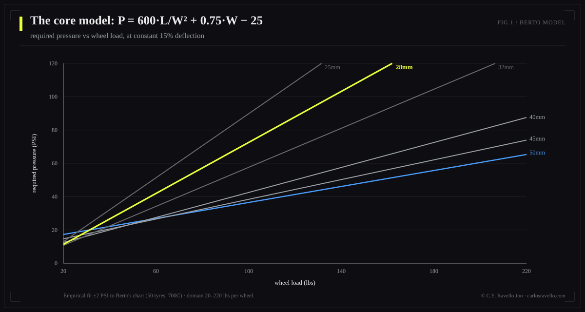
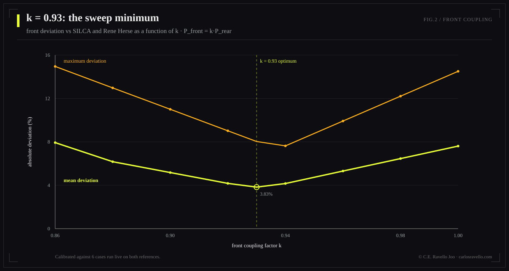
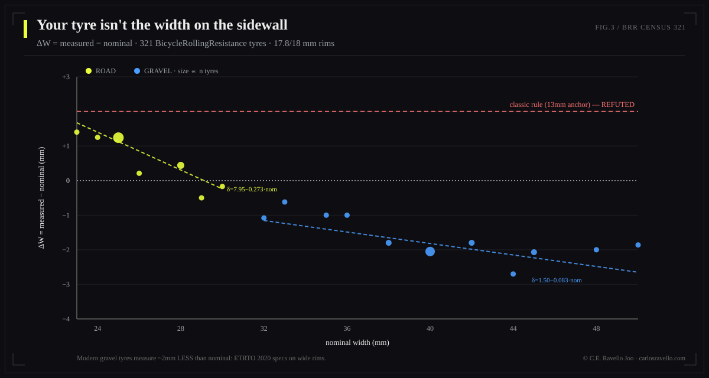
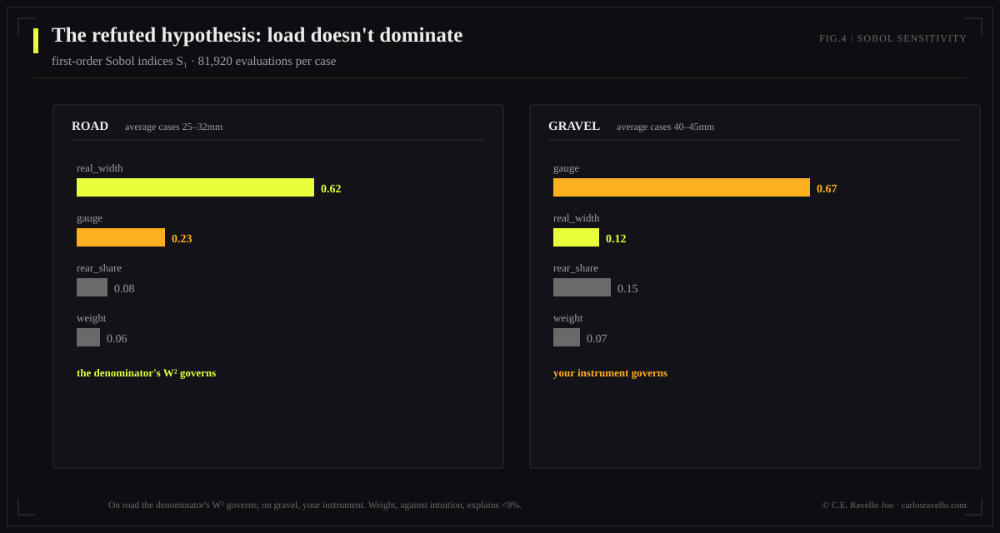
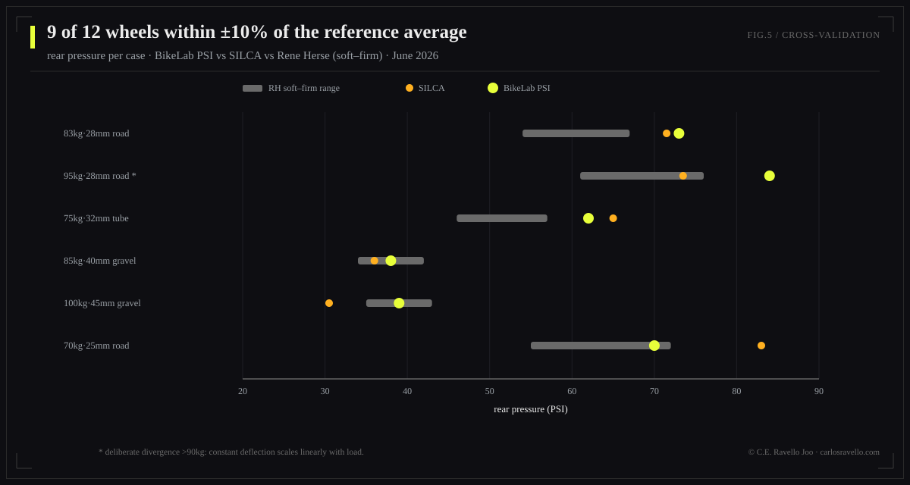

BikeLab Studio — Technical Publications // White Paper
Empirical calibration with a 321-tire census, Latin Hypercube uncertainty propagation, and cross-validation against SILCA and Rene Herse
We present the physical-statistical model behind the BikeLab PSI Calculator. Its core is Frank Berto's constant-deflection criterion (15% tire drop), empirically fit as P = 600·L/W² + 0.75·W − 25 (±2 PSI within Berto's measured domain: 20–220 lbs per wheel). On that core we introduce four contributions: (1) a re-anchored real-width correction regressed over 321 nominal/measured pairs from BicycleRollingResistance, showing that the classic rule anchored at 13 mm rims double-corrects what modern labeling (ETRTO 2020) already incorporates; (2) a front coupling P_f = 0.93·P_r replacing static-load assignment, justified by braking load transfer and calibrated against SILCA and Rene Herse; (3) uncertainty propagation via Latin Hypercube Sampling (N=10,000) producing 90% confidence bands — a figure no calculator on the market publishes; and (4) a global sensitivity analysis (Sobol indices, 81,920 evaluations per case) refuting the intuitive hypothesis that load dominates the output: on the road, real width dominates (S₁ = 0.51–0.68); on gravel, gauge error does (S₁ = 0.61–0.73). Cross-validation over 6 configurations yields 9/12 wheels within ±10% of the average of both references; the 3 remaining deviations have identified physical causes and are documented rather than fitted away.
Ask three respectable sources what pressure a 28 mm tire should run under an 83 kg rider and you will receive three answers differing by up to 20 PSI. Not because any of them is "wrong," but because they optimize different objective functions and none declares its uncertainty. SILCA optimizes impedance over professional athlete data; Rene Herse optimizes comfort-speed over real-road measurements with supple casings; manufacturer tables optimize not getting sued. In every case the user receives a bare number carrying implicit authority and nonexistent precision.
This work takes the opposite position: we choose a physically measurable and reproducible criterion (constant deflection), declare it, calibrate its corrections with verifiable public data, quantify the output's uncertainty, and publish the divergences against market references instead of hiding them. The reader does not have to trust us: every constant in this document can be audited.
Berto's chart admits a remarkably compact empirical fit. For per-wheel load L (lbs) and real width W (mm):
Three observations for the reader who wants to understand rather than merely apply. First: the dominant term is L/W² — required pressure grows linearly with load and falls with the square of width. That quadratic dependence is the physical reason width governs the sensitivity analysis (§8). Second: the +0.75·W term corrects for the casing's own structural stiffness at larger widths. Third: the −25 constant centers the fit; it has no physical interpretation and must not be extrapolated outside the domain.

A naive application assigns each wheel its static load. For racing geometry (40/60) this yields a front ~34% softer than the rear. Our initial cross-validation showed that front diverging from SILCA and Rene Herse by −24% to −36% — a systematic failure, not a numerical one.
The cause is that static load is the wrong variable for the front wheel. Under braking, mass transfer drives load peaks far above the nominal 40%; a front computed for the static 40% deflects excessively precisely in the maneuver where handling is critical. Market references solve this without declaring it: SILCA prescribes front/rear differences of ~2%, and Rene Herse publishes a single value for both wheels.
Our solution declares it: the rear is computed with pure Berto on its static load; the front is coupled:

The formula requires the real mounted width, not the one printed on the sidewall. The classic rule — width grows ~0.4 mm per mm of internal rim width above the Berto-era 13 mm baseline — contains two independent claims deserving separate scrutiny: the slope (0.4 mm/mm) and the anchor (nominal exact at a 13 mm rim).
To audit them we captured BicycleRollingResistance's complete census: 159 road tires measured on an 18.0 mm internal rim and 162 gravel tires on 17.8 mm (321 nominal/measured pairs, tests 2014–2026). Results:
The re-anchored correction, by linear regression over the census:

If the user measures the mounted tire with a caliper, that measurement replaces the entire chain above and the input's uncertainty falls from σ=1.5 mm to σ=0.5 mm. The correction exists for those who don't measure; the caliper is the bypass.
| Correction | Value | Basis |
|---|---|---|
| Butyl tube | +5% | Tube hysteresis reduces effective deflection. The classic +10% produced a +11.9% validation deviation; +5% is consistent with SILCA's butyl-vs-tubeless treatment (<10%). |
| Supple casing | −5% | Heine: supple casings deflect more at equal pressure (re-analysis of Berto's data). |
| Stiff/touring casing | +5% | Symmetric to the above. |
| Rough asphalt | −5% | Impedance losses grow with pressure on irregular surfaces. |
| Gravel | −12.5% | Midpoint of the documented range (−10 to −15%). |
Applied after all corrections, no exceptions: hookless rim 72.5 PSI (5 bar, ETRTO); hookless with internal width ≥30 mm, 60 PSI; below 25 PSI the tool warns about pinch flats and burping. When the cap binds, the tool shows the calculated value next to the capped one — the user sees the physics and sees the limit, and understands the limit wins. The master rule accompanies every result: never exceed the tire or rim manufacturer maximum, whichever is lower.
Four uncertain variables: system weight ~N(μ, 2 kg); real width ~N(W, 1.5 mm) — or 0.5 mm with caliper; rear load fraction ~U(±3 pp); gauge error ~N(1, 5%) multiplicative. Latin Hypercube sampling (N=10,000 per configuration; converges with ~10× fewer samples than crude Monte Carlo for percentiles). Sensitivity via Sobol indices (Saltelli scheme, base 2¹³ → 81,920 evaluations per case, no second order).
| Case | Configuration | Rear: mean [p5–p95] | Band ±PSI |
|---|---|---|---|
| 1 | 83 kg · 28 mm · road · 21 rim | 73 [63–86] | ±11.7 |
| 2 | 95 kg · 28 mm · road · 21 rim | 84 [72–100] | ±13.8 |
| 3 | 75 kg · 32 mm · road · tube · 19 rim | 63 [54–73] | ±9.2 |
| 4 | 85 kg · 40 mm · gravel · 24 rim | 38 [35–41] | ±3.2 |
| 5 | 100 kg · 45 mm · gravel · 25 rim | 39 [36–41] | ±2.5 |
| 6 | 70 kg · 25 mm · road · 21 rim | 71 [59–85] | ±12.8 |
The bands published in the tool exclude gauge error: it is the user's instrument uncertainty, not the model's. Mixing them would make honest output look imprecise about something it does not control. The gauge warning is delivered separately, where it dominates (gravel).
The design hypothesis was that per-wheel load would dominate via L/W². With realistic uncertainties, it is false:
| Case | S₁ weight | S₁ real width | S₁ distribution | S₁ gauge |
|---|---|---|---|---|
| 1 (road 28) | 0.056 | 0.631 | 0.080 | 0.230 |
| 2 (road 28) | 0.042 | 0.650 | 0.079 | 0.227 |
| 3 (road 32) | 0.084 | 0.512 | 0.098 | 0.304 |
| 4 (gravel 40) | 0.084 | 0.159 | 0.150 | 0.605 |
| 5 (gravel 45) | 0.058 | 0.073 | 0.143 | 0.726 |
| 6 (road 25) | 0.066 | 0.684 | 0.067 | 0.180 |

The mechanism is arithmetic once seen: ±1.5 mm on a ~30 mm width is ±5% entering squared; ±2 kg on 83 kg is ±2.4% linear. S₁ ≈ S_T in all cases: the model is additive at these scales, with no relevant interactions. Design consequences: width is requested at 1 mm resolution with a caliper field offered; weight and geometry can be coarse inputs at no cost; on gravel the tool warns that the user's gauge matters more than the model.
Six configurations executed live (June 2026) on the SILCA and Rene Herse calculators, documenting every extra parameter and its mapping. Criterion: deviation ≤10% from the average of both references on road; widened tolerance on gravel, where the references themselves diverge by up to 30%. Result: 9/12 wheels within criterion.
| Case | BLS F/R | SILCA F/R | RH soft–firm | R dev. vs average |
|---|---|---|---|---|
| 1 | 68 / 73 | 70 / 71.5 | 54–67 | +10.2%* |
| 2 | 78 / 84 | 71.5 / 73.5 | 61–76 | +17.9%† |
| 3 | 58 / 62 | 63.5 / 65 | 46–57 | +7.0% |
| 4 | 35 / 38 | 34.5 / 36 | 34–42 | +2.8% |
| 5 | 36 / 39 | 29.5 / 30.5 | 35–43 | +16.7%‡ |
| 6 | 65 / 70 | 80.5 / 83 | 55–72 | −2.6% |
* Rounding artifact: references only accept integer widths; the model works in tenths. † Weight scaling, §9.1. ‡ Gravel: SILCA and RH diverge 30% from each other here; we land between them.

For riders over 90 kg this calculator recommends firmer pressures than SILCA. It is not a bug: the constant-deflection criterion (15% drop) requires pressure to scale linearly with load — a heavier rider deflects the tire more at the same pressure. Calculators that optimize impedance saturate with weight; those that optimize deflection do not. We chose deflection because it is the measurable, reproducible criterion. We are also inside Berto's empirical domain (he measured up to 220 lbs per wheel: case 2 loads 125 lbs on the rear). In practice, the 72.5 PSI hookless cap compresses this divergence on most modern wheels.
Berto explicitly states the 15% criterion is not valid for MTB: rims are proportionally narrower, knobs distort the deflection measurement, and the off-road objective is traction and absorption, not rolling resistance. Rather than extrapolate a model outside its validity domain — the cardinal sin of applied engineering — we declare it: the MTB module will be developed separately on manufacturer heuristics, and the interface already reserves its place.
This work applies Carlos Eduardo Ravello Joo's Dynamic Coherence Model (MCD): explicitly separating what the system reveals (the model, its constants, its validation — all auditable) from what it manages as unresolved (quantified uncertainty, documented divergences, declared limits). The ±PSI band and section 9.1 are not concessions: they are the product. Coherence between what the tool says, what it does and how it shows it is the governing design criterion.